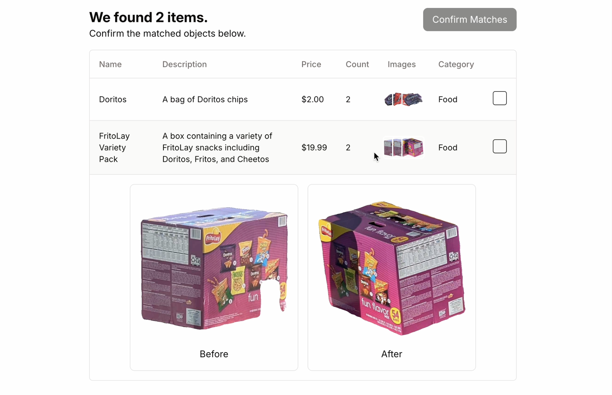
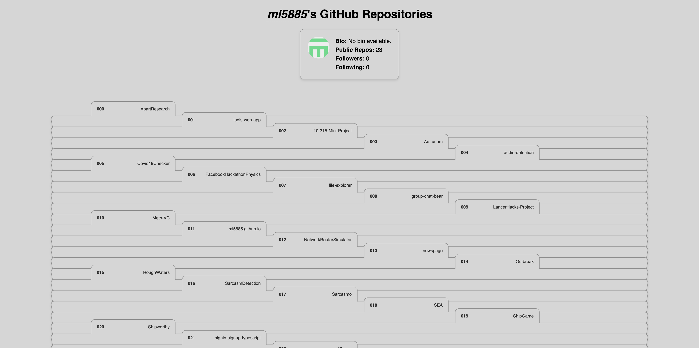
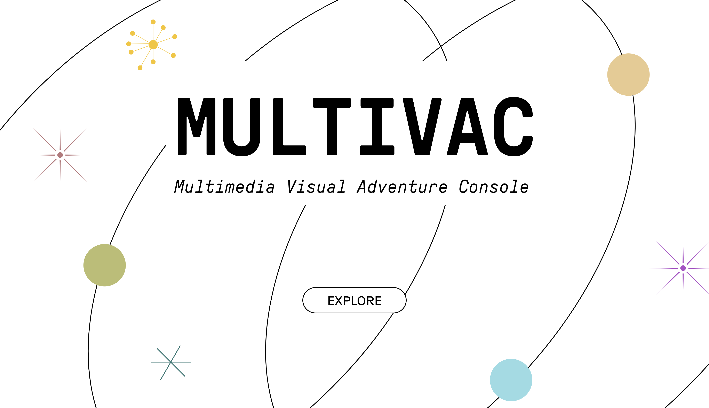
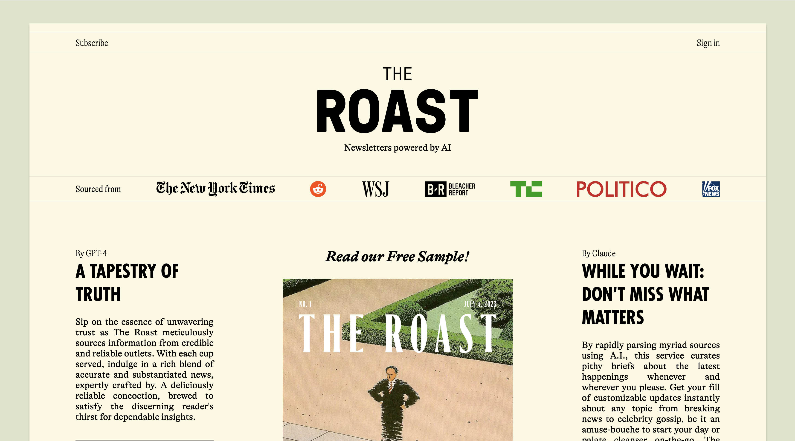
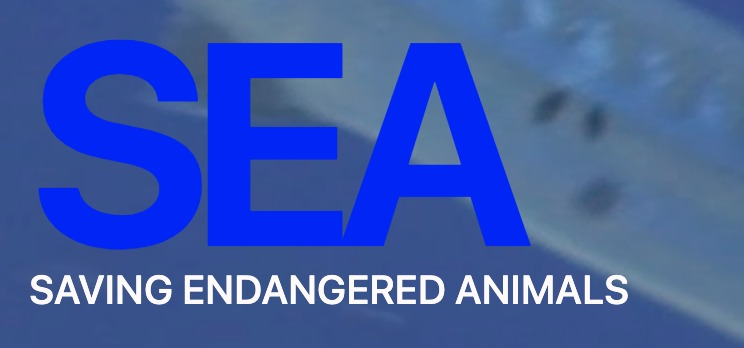
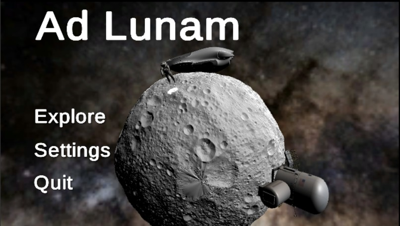
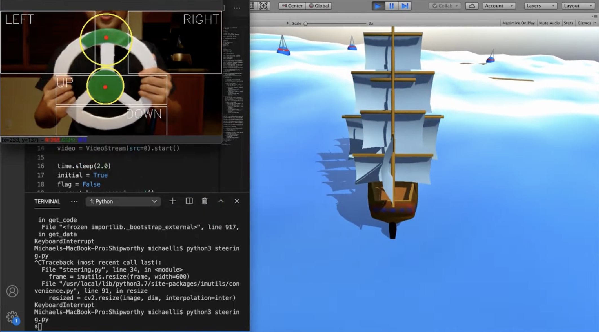
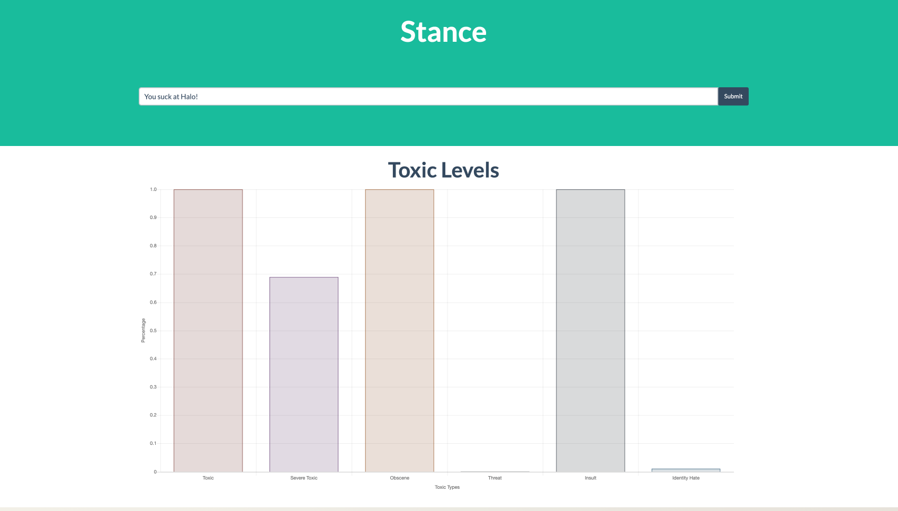

Michael Li
About
Hi, I'm Michael. I'm studying computer science, statistics and machine learning at Carnegie Mellon University. I'm generally interested in the field of machine learning, particularly in mechanistic interpretability.
Outside of school, I enjoy hackathons, playing the piano and speedcubing.
Experience
-
Machine Learning Engineering Intern,
Epirus
(June 2024 - August
2024)
Engineered real-time drone simulations in Python and used PyTorch to train a reinforcement learning agent with Proximal Policy Optimization to optimally engage unknown drone swarms, leading to significant improvements over baseline methods.
-
Full Stack Engineering Intern,
Beaver Health
(May 2023 - August
2023)
Developed a generative AI dialogue framework using GPT-4 and TypeScript to digitize evidence-based health interventions for Alzheimer's patients. Backed by National Institute on Aging & Harvard Innovation Labs.
-
Researcher, University of Victoria
(July 2022 - May
2023)
Implemented and trained Temporal Convolutional Networks (TCNs) for forecasting COVID-19 case counts, outperforming CDC benchmarks by a significant margin in predictive accuracy and timeliness.
-
Creator & Software Engineer,
COVIDCatcher
(December 2021 – May
2023)
Developed a multimodal ML model using VGG-19, XGBoost to detect COVID-19 symptoms from cough audio and health surveys, deployed with React, Flask and AWS.
-
Software Engineer,
Amador Valley
Robotics (AVBotz)
(August 2018 - May
2022)
Implemented real-time object detection in ROS with OpenCV and C++, improving detection speed by 40%. Automated image annotation for dataset creation using YOLOv5 and DetNet in PyTorch, saving 100+ hours of manual labor.
2022 Technical Report, 2021 Technical Report, 2020 Technical Report
Projects
- CLaiM (October 2024) Automatically file home insurance claims after natural disasters using computer vision. Won best use of Hyperbolic cloud inference at CalHacks 11.0 
- Github Repo Explorer (June 2024) Explore GitHub repos as folders. 
-
Colors of
Wes
Anderson
(October 2023)
Color palettes from Wes Anderson films.

- Multivac (October 2023) Infinite text adventure game built with Python, React, Flask, LangChain, and LlamaIndex. Harvard Hacks 2023. 
- The Roast (July 2023) Daily personalized newsletter using GPT, Claude, and LangChain to curate daily news based on user preferences. UC Berkeley AI Hackathon 2023. 
- SEA (July 2020) Deep learning pipeline using TensorFlow and Python to identify endangered marine wildlife images. 
- Ad Lunam (July 2020) VR space exploration game using C# and Unity with procedurally generated planets and asteroid fields. Won 3rd overall at To the Moon and Hack 2020. 
- Shipworthy (June 2020) Real-time ship simulator that uses computer vision with OpenCV to steer a ship in Unity via a physical steering wheel. Won 1st overall at HackItShipIt 2020. 
- Stance (June 2020) Developed a machine learning app using sklearn and Flask to detect toxic comments online, using LIME to provide interpretable explanations of the classifications. Won 1st overall at Data Day Grind 2020. 
Research
-
Predicting
the daily
counts of COVID-19 infection using temporal
convolutional
networks
Michael Li, Fatemeh Esfahani, Li Xing, Xuekui Zhang
Journal of Global Health 13, 2023
Contact
limichael353@gmail.com